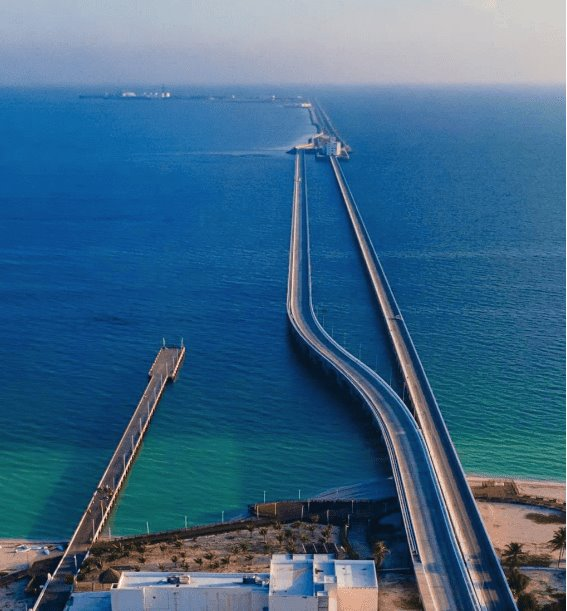
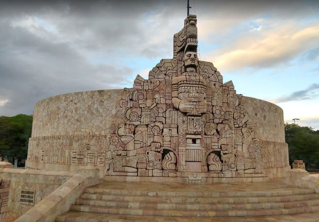
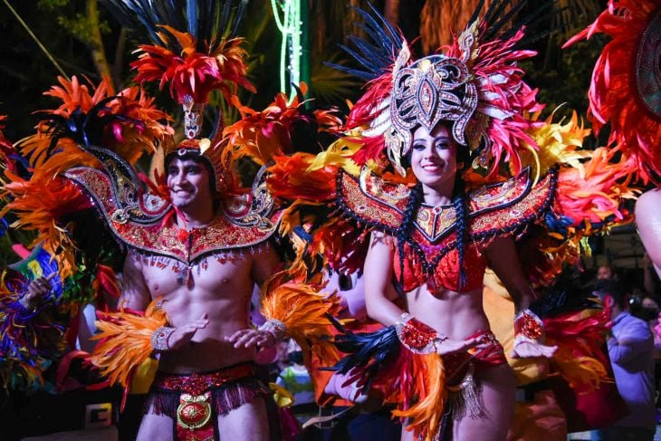
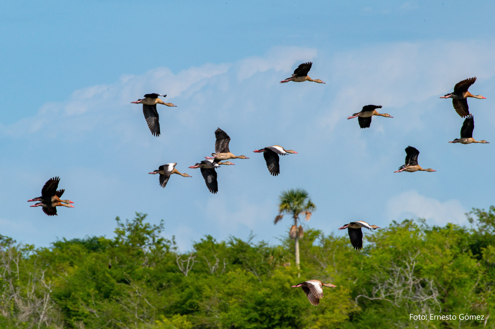
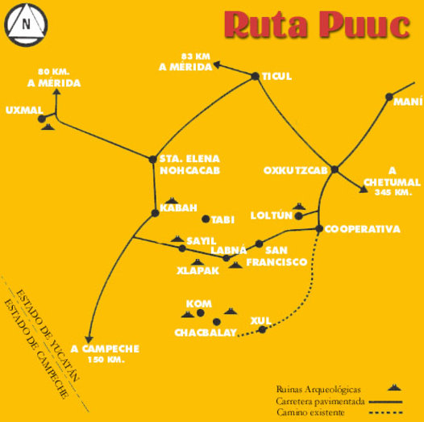
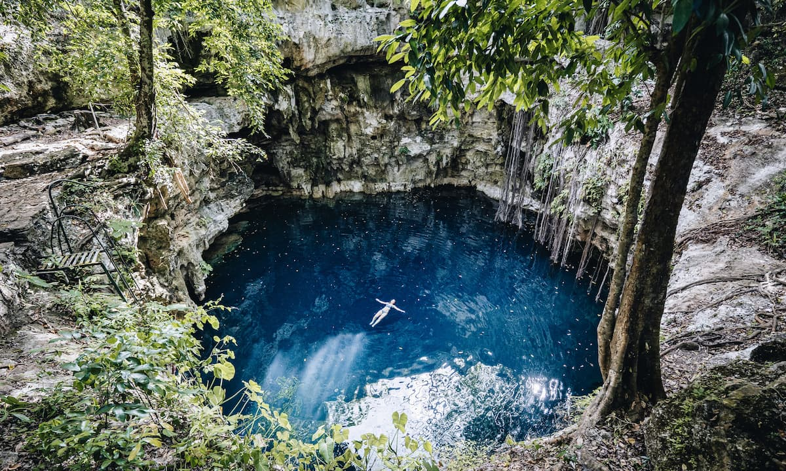
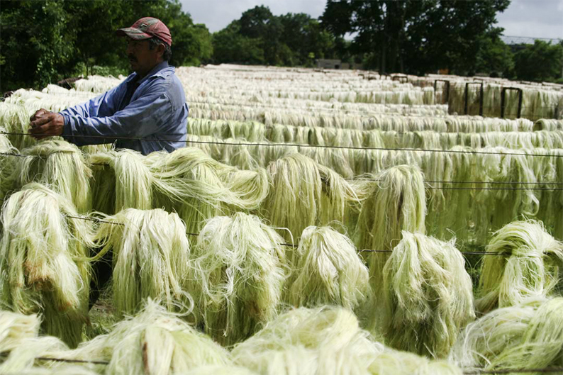
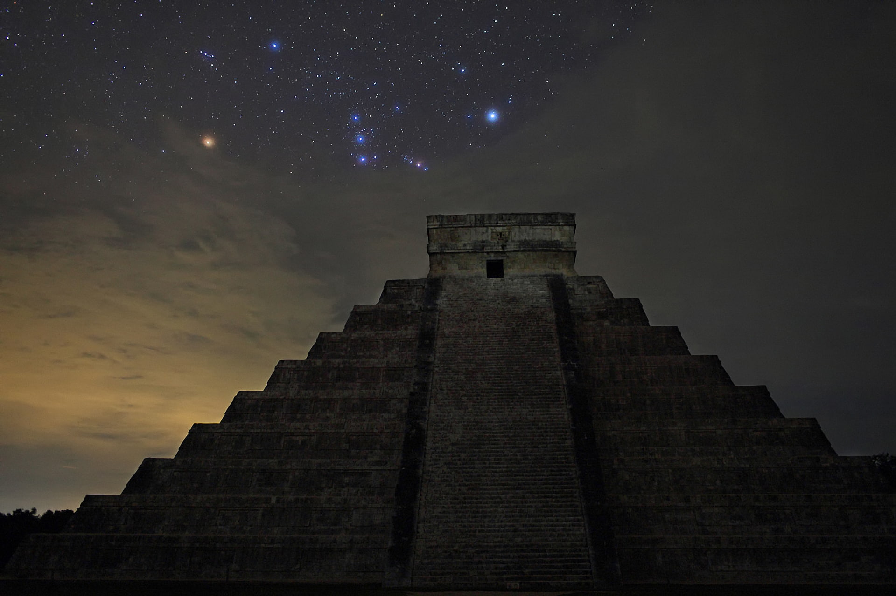

Seguridad
Yucatán es el estado mexicano más seguro según las estadísticas, con una tasa de criminalidad muy baja en comparación con otras regiones del país.
Seguridad
Yucatán es el estado mexicano más seguro según las estadísticas, con una tasa de criminalidad muy baja en comparación con otras regiones del país.

En Puerto Progreso, Yucatán, se encuentra el muelle más largo de México, con una longitud de 6.5 kilómetros que se extiende hacia elGolfo deMéxico. Este puerto marítimo es vital para el comercio y elembarque de pasajeros de cruceros y barcos de carga.

El Monumento a la Patria en Mérida, Yucatán, conmemora el centenario del inicio de la Guerra de Castas. Esta estructura imponente representa la lucha y el espíritu patriótico de Yucatán, con esculturas y relieves que honran a personajes destacados de la historia local.

El Carnaval de Mérida, conocido como “La fiesta de la alegría”, es uno de los más importantes de México. Durante una semana, la ciudad se llena de desfiles, música y bailes coloridos, atrayendo a visitantes de todo el país.

Yucatán es uno de los principales destinos para observar aves en México debido a su diversidad de especies y hábitat natural.

La Ruta Puuc, al sur de Yucatán, es famosa por su estilo arquitectónico distintivo en los sitios mayas. Los mosaicos de piedra decoran las fachadas de las zonas arqueológicas como Uxmal, Kabah, Sayil, Labná y Xlapak.

Yucatán es famoso por sus cenotes, que son formaciones naturales de agua dulce en cuevas o sumideros. Estos cenotes son ideales para nadar, bucear y explorar. Algunos de los más conocidos son Ik Kil, Dos Ojos y Xkeken.

Durante el siglo XIX, la industria del henequén (una planta fibrosa) floreció en Yucatán. Las antiguas haciendas henequeneras, como Hacienda Sotuta de Peón, ofrecen visitas guiadas para aprender sobre la historia y la producción de esta fibra.

El sitio arqueológico de Chichen Itzá es una de las Nuevas Siete Maravillas del Mundo. La pirámide de Kukulcán es un impresionante ejemplo de la arquitectura maya y atrae a turistas de todo el mundo.